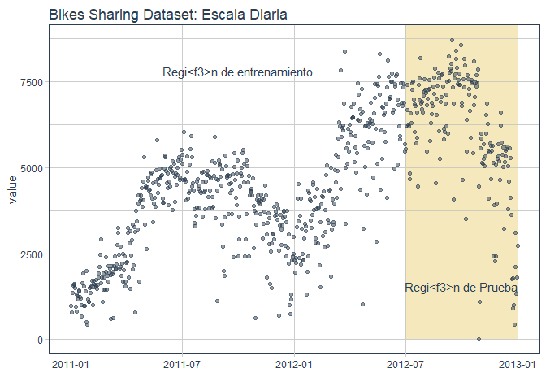

library(workflows)
library(parsnip)
library(recipes)
library(yardstick)
library(glmnet)
library(tidyverse)
library(tidyquant)
library(timetk)bikes <- read_csv("C:/Users/Personal/Desktop/Modelo en R/Arima manufactura/Prueba/day.csv")
bikes_tbl <- bikes %>%
select(dteday, cnt) %>%
rename(date = dteday,
value = cnt)Conjunto de Datos
bikes_tbl %>%
ggplot(aes(x = date, y = value)) +
geom_rect(xmin = as.numeric(ymd("2012-07-01")),
xmax = as.numeric(ymd("2013-01-01")),
ymin = 0, ymax = 10000,
fill = palette_light()[[4]], alpha = 0.01) +
annotate("text", x = ymd("2011-10-01"), y = 7800,
color = palette_light()[[1]], label = "Regi昼㸳n de entrenamiento") +
annotate("text", x = ymd("2012-10-01"), y = 1550,
color = palette_light()[[1]], label = "Regi昼㸳n de Prueba") +
geom_point(alpha = 0.5, color = palette_light()[[1]]) +
labs(title = "Bikes Sharing Dataset: Escala Diaria", x = "") +
theme_tq()